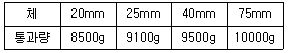

콘크리트기능사 (2007-04-01 기출문제)
1과목: 콘크리트재료
1. 골재의 표면건조 포화상태에서 공기 중 건조상태의 수분을 뺀 물의 양은?
- 함수량
- 흡수량
- 표면수량
- 유효흡수량
(정답률: 64%)

2. 다음 중 경량 골재에 속하는 것은?
- 강자갈
- 바다자갈
- 산자갈
- 화산자갈
(정답률: 63%)
3. 프리팩트 콘크리트에 사용하는 진골재의 조립율은 어느 범위가 적당한가?
- 0.5~0.8
- 0.8~1.2
- 1.4~2.2
- 2.2~3.2
(정답률: 37%)
4. 굵은 골재의 밀도를 측정하기 위하여 일정량의 시료를 정해진 과정에 다라 측정한 결과 공기 중 표면 건조 포화 상태의 질량은 450g, 물속에서의 질량은 280g, 절대건조상태의 질량은 390g이었다. 이 골재의 표면 건조 포화 상태의 밀도는? (단, 시험온도에서의 물의 밀도는 1g/cm3이다.)
- 2.95g/cm3
- 2.85g/cm3
- 2.75g/cm3
- 2.65g/cm3
(정답률: 52%)
5. 굵은 골재의 유해물 함유량의 한도 중 점토덩어리는 질량 백분율로 얼마 이하인가?
- 0.25
- 0.5
- 1.0
- 5.0
(정답률: 43%)
6. 다음 중 시멘트의 조기 강도가 큰 순서로 되어 있는 것은?
- 보통 포틀랜드 시멘트 ＞ 고로시멘트 ＞ 알루미나시멘트
- 알루미나시멘트 ＞ 고로시멘트 ＞ 보통 포틀랜드 시멘트
- 알루미나시멘트 ＞ 보통 포틀랜드 시멘트 ＞ 고로시멘트
- 고로시멘트 ＞ 보통 포틀랜드 시멘트 ＞ 알루미나시멘트
(정답률: 64%)
7. 1g의 시멘트가 가지고 있는 전체 입자의 표면적의 합계를 무엇이라 하는가?
- 비표면적
- 총표면적
- 단위표면적
- 표면적
(정답률: 73%)
8. 시멘트의 응결에 대한 설명 중 틀린 것은?
- 수량이 많고 시멘트가 풍화되었을 경우 응결이 늦어진다.
- 온도와 분말도가 높고 습도가 낮을 경우는 응결이 빨라진다.
- 석고의 양이 많으면 응결 시간이 늦어진다.
- 화학 성분 중에서 C3A가 많으면 응결이 늦어진다.
(정답률: 54%)
9. 댐과 같은 콘크리트 단면이 큰 공사에 가장 적합한 시멘트는?
- 중용열 포틀랜드 시멘트
- 보통 포틀랜드 시멘트
- 알루미나 시멘트
- 백색 포틀랜드 시멘트
(정답률: 90%)
10. 다음 시멘트 중 바닷물에 대한 저항성이 가장 큰 것은?
- 고르 슬래그 시멘트
- 조강 포틀랜드 시멘트
- 백색 포틀랜드 시멘트
- 보통 포틀랜드 시멘트
(정답률: 53%)
11. 입자가 둥글고 표면이 매끄러워 콘크리트의 워커빌리티를 증대시키며, 가루석탄을 연소시킬 때 굴뚝에서 전기 집진기로 채취하는 실리카질의 혼화재는?
- A.E제
- 포졸란
- 플라이 애쉬
- 리그널
(정답률: 78%)
12. 서중 콘크리트의 시공이나 레디믹스트 콘크리트에서 운반거리가 먼 경우, 또는 연속 콘크리트를 칠 때 작업 이음이 생기지 않도록 할 경우에 사용하면 효과가 있는 혼화제는 어느 것인가?
- 분산제
- 지연제
- 증진제
- 응결경화 촉진제
(정답률: 82%)
13. 철근 콘크리트에서 철근이 녹슬지 않도록 사용하는 혼화제는?
- AE제
- 경화촉진제
- 감수제
- 방칭제
(정답률: 67%)
14. 뿜어불이기 콘크리트에 대한 설명으로 틀린 것은?
- 시멘트는 보통 포틀랜드시멘트를 사용한다.
- 혼화제로는 급결제를 사용한다.
- 굵은 골재는 최대치수가 40~50mm의 부순돌 또는 강자갈을 사용한다.
- 시공방법으로는 건식공법과 습식공법이 있다.
(정답률: 41%)
15. 부순 골재에 대한 설명 중 옳은 것은?
- 부순 잔골재의 석분은 콘크리트 경화 및 내구성에 도움이 된다.
- 부순 굵은 골재는 시멘트풀과의 부착이 좋다.
- 부순 굵은 골재는 콘크리트를 비빌 때 소요 단위수량이 적어진다.
- 부순 굵은 골재를 사용한 콘크리트는 수밀성은 향상되나 휨강도는 감소된다.
(정답률: 47%)
16. 빈틈률이 작은 골재를 사용한 콘크리트에 대한 설명으로 틀린 것은?
- 시멘트풀의 양이 적게 들어 수화열이 적어진다.
- 건조 수축이 작아진다.
- 콘크리트의 수밀성 및 닳음 저항성이 작아진다.
- 콘크리트의 강도와 내구성이 커진다.
(정답률: 50%)
17. 다음 중 혼합 시멘트가 아닌 것은?
- 고로 슬래그 시멘트
- 플라이 애시 시멘트
- 포틀랜드 포졸란 시멘트
- 알루미나 시멘트
(정답률: 60%)
18. 시멘트 64g, 처음 광유의 눈금의 읽기 0.5mL, 사료와 광유의 눈금 읽기가 20.5mL 일 때 시멘트의 비중은 얼마인가?
- 3.2
- 3.6
- 4.3
- 5.2
(정답률: 54%)
19. 일반 콘크리트의 반죽질기 시험에 널리 사용되는 시험법은?
- 슬럼프 시험
- 비비 시험
- 리몰딩 시험
- 비카침 시험
(정답률: 84%)
20. 다음의 혼화재료 중에서 사용량이 소량으로서 배합계산에서 그 양을 무시할 수 있는 것은?
- AE제
- 팽창재
- 플라이 애시
- 고로 슬래그 미분말
(정답률: 60%)
2과목: 콘크리트시공
21. 콘크리트가 된 반죽이면 진동기를 써서 다져야 한다. 가장 많이 사용되는 진동기는?
- 내부 진동기
- 거푸집 진동기
- 평면식 진동기
- 공기식 진동기
(정답률: 75%)
22. 콘크리트를 비비는 시간은 시험에 의해 정하는 것을 원칙으로 하나 시험을 실시하지 않는 경우 가경식 믹서에서 비비기 시간은 최소 얼마 이상을 표준으로 하는가?
- 1분 30초
- 2분
- 3분
- 3분 30초
(정답률: 86%)
23. 높은 곳으로부터 콘크리트를 부리는 경우 가장 적당한 운반기구는?
- 손수레
- 연직 슈트
- 덤프트럭
- 콘크리트 플레이서
(정답률: 75%)
24. 일반콘크리트의 경우 AE 공기량이 어느 정도일 때 워커빌리티(workability)와 내구성이 가장 좋은 콘크리트가 되는가?
- 1~3%
- 4~7%
- 8~10%
- 11~14%
(정답률: 72%)
25. 콘크리트의 물-시멘트비(W/C)를 정하는 기준으로 거리가 먼 것은?
- 내구성
- 수밀성
- 소요강도
- 굵은 골재의 최대치수
(정답률: 69%)
26. 콘크리트의 배합설계에서 재료 계량의 허용 오차가 맞는 것은?
- 물 : 1%, 혼화재 : 3%
- 물 : 1%, 혼화재 : 2%
- 물 : 2%, 혼화재 : 1%
- 물 : 3%, 혼화재 : 4%
(정답률: 76%)
27. 수밀 콘크리트의 물-시멘트비는 얼마 이하를 표준으로 하는가?(오류 신고가 접수된 문제입니다. 반드시 정답과 해설을 확인하시기 바랍니다.)
- 45%
- 50%
- 55%
- 60%
(정답률: 31%)
28. 콘크리트 운반에 대한 일반적인 설명 중 가장 적당하지 않은 것은?
- 운반방법은 재료의 분리 및 손실이 없는 경제적인 방법을 선택한다.
- 운반때문에 치기에 필요한 콘시스턴시(consistency)를 변화시켜선 안된다.
- 운반도중 재료가 분리된 콘크리트는 절대 사용할 수 없다.
- 콘크리트는 신속하게 운반하여 즉시 타설하고, 충분히 다져야 한다.
(정답률: 56%)
29. 콘크리트의 블리딩에 대한 설명 중 가장 적합치 않은 것은?
- AE제를 사용한 콘크리트는 블리딩량이 감소하고 포졸란을 사용한 콘크리트는 블리딩량이 증대된다.
- 시멘트의 분말도가 높을수록 블리딩량은 적다.
- 단위수량을 줄이면 블리딩량이 줄어든다.
- 블리딩량이 많으면 수밀성이 약한 콘크리트가 된다.
(정답률: 42%)
30. 콘크리트 배합설계에서 물-시멘트비가 48%, 절대잔골재율이 35%, 단위수량이 170kg/m3을 얻었다면 단위시멘트량은 얼마인가?
- 485kg/m3
- 413kg/m3
- 354kg/m3
- 327kg/m3
(정답률: 42%)
31. 일반수중 콘크리트의 시공에 관한 설명 중 옳지 않은 것은?
- 콘크리트는 정수 중에서 타설하는 것이 좋다.
- 콘크리트는 수중에 낙하시켜서는 안된다.
- 점성이 풍부해야 하며 물-시멘트비는 55%이상으로 해야 한다.
- 콘크리트 펌프나 트레미를 사용해서 타설해야 한다.
(정답률: 79%)
32. 서중콘크리트에 대한 설명으로 옳은 것은?
- 월평균 기온이 5℃를 넘을 때 시공한다.
- 콘크리트 재료는 온도가 되도록 낮아지도록 하여 사용하여야 한다.
- 배합은 필요한 강도 및 워커빌리티를 얻는 범위내에서 단위 수량과 시멘트량은 많이 되도록 한다.
- 콘크리트를 비벼서 쳐넣을 때까지의 시간은 30분을 넘어서는 안된다.
(정답률: 50%)
33. 콘크리트의 운반에 있어 보통 콘크리트를 펌프로 압송할 경우 굵은 골재 최대 치수의 표준은 얼마인가?
- 25mm이하
- 30mm이하
- 35mm이하
- 40mm이하
(정답률: 67%)
34. 콘크리트의 표면에 아스팔트유제나 비닐유제 등으로 불투수층을 만들어 수분의 증발을 막는 양생방법을 무엇이라 하는가?
- 증기양생
- 전기양생
- 습윤양생
- 피복양생
(정답률: 57%)
35. 콘크리트 치기의 진동 다지기에 있어서 내부 진동기로 똑바로 찔러 넣어 진동기의 끝이 아래층 콘크리트 속으로 어느 정도 들어가야 하는가?
- 10cm
- 15cm
- 20cm
- 30cm
(정답률: 65%)
36. 콘크리트 타설에 대한 설명이 잘못된 것은?
- 콘크리트 타설의 1층 높이는 다짐능력을 고려하여 이를 결정하여야 한다.
- 콘크리트를 쳐 올라가는 속도는 30분에 2~3m 정도로 한다.
- 거푸집의 높이가 높을 경우, 재료의 분리를 막기 위해 연직슈트, 깔때기 등을 사용한다.
- 콘크리트를 2층 이상으로 나누어 타설할 경우, 상층과 하층이 일체가 되도록 한다.
(정답률: 77%)
37. 단위 잔골재량의 절대 부피가 0.253m3이고, 잔골재의 비중이 2.60일 때 단위 잔골재량은 몇 kg/m3인가?
- 658
- 687
- 693
- 721
(정답률: 44%)
38. 콘크리트는 타설한 후 직사 광선이나 바람에 의해 표면의 수분이 증발하는 것을 막기 위해 습윤 상태로 보호해야 한다. 보통 포틀랜드 시멘트를 사용한 콘크리트인 경우 습윤 양생기간의 표준은? (단, 일평균기온이 15℃ 이상인 경우)
- 3일
- 5일
- 14일
- 21일
(정답률: 75%)
39. 철근 콘크리트 구조물에 있어서 확대기초, 기둥, 벽 등의 측벽 거푸집을 떼어 내어도 좋은 시기의 콘크리트 압축강도는 얼마인가?
- 3.5 MPa 이상
- 5 MPa 이상
- 14 MPa 이상
- 28 MPa 이상
(정답률: 45%)
40. 싣기 용량(W) 7m3, 사이클 시간(Cm) 1시간 20분, 작업효율(E) 0.9인 트럭믹서의 1시간당 운반량은 몇 m3인가?
- 3.6m3
- 4.7m3
- 5.2m3
- 6.3m3
(정답률: 52%)
3과목: 콘크리트 재료시험
41. 콘크리트의 슬럼프 시험에 사용하는 콘의 밑면 안지름은?
- 15cm
- 20cm
- 25cm
- 30cm
(정답률: 67%)
42. 다음 중 레이턴스를 바르게 설명한 것은?
- 주로 물의 양이 많고 적음에 따르는 반죽이 되거나 진 정도를 나타내는 성질
- 거푸집을 떼어내면 천천히 그 모양이 변하기는 하지만 허물어지거나 재료가 분리되지 않는 성질
- 굳지 않는 콘크리트에서 물이 올라오는 현상
- 블리딩에 의하여 콘크리트 표면에 떠올라 가라앉은 미세한 물질
(정답률: 79%)
43. 모래에 포함되어 있는 유기불순물 시험에 사용하는 표준색용액을 제조하는 방법으로 옳은 것은?
- 3%의 수산화나트륨 용액과 2%의 탄닌산 용액으로 표준색용액을 만든다.
- 2%의 수산화나트륨 용액과 3%의 탄닌산 용액으로 표준색용액을 만든다
- 10%의 알코올 용액과 3%의 탄닌산 용액으로 표준색용액을 만든다
- 5%의 알코올 용액과 5%의 탄닌산 용액으로 표준색용액을 만든다
(정답률: 35%)
44. 골재의 안정성 시험을 하기 위한 시험용액에 사용되는 시약은 어느 것인가?
- 탄닌산
- 염화칼슘
- 황산나트륨
- 수산화나트륨
(정답률: 63%)
45. 콘크리트 압축강도 시험용 공시체 표면의 캐핑은 무엇으로 하는가?
- 된반죽의 시멘트 풀
- 가는 모래
- 콘크리트
- 시멘트 분말
(정답률: 50%)
46. 콘크리트의 압축강도 시험시 공시체의 함수상태는 어떤 상태로 해야 하는가?
- 노건조상태
- 공기중건조상태
- 표면건조포화상태
- 습윤상태
(정답률: 40%)
47. 지름 10cm, 높이 20cm인 콘크리트 공시체로 압축강도 시험을 실시한 결과 공시체 파괴시 최대하중이 19100kg 이었다. 이 공시체의 압축강도는?
- 283kg/cm2
- 263kg/cm2
- 243kg/cm2
- 223kg/cm2
(정답률: 50%)
48. 규격 15cm×15cm×53cm인 콘크리트 공시체로 지간길이 45cm인 단순보의 3등분 하중장치로 휨강도 시험을 실시한 결과 시험기에 나타난 최대하중이 3150kg일 때 공시체가 지간의 중앙에서 파괴되었다면 휨강도는?
- 40kg/cm2
- 42kg/cm2
- 44kg/cm2
- 46kg/cm2
(정답률: 50%)
49. 콘크리트의 휨강도 시험용 공시체의 길이와 높이에 대한 설명으로 옳은 것은?(오류 신고가 접수된 문제입니다. 반드시 정답과 해설을 확인하시기 바랍니다.)
- 길이는 높이의 2배보다 10cm이상 더 커야 한다.
- 길이는 높이의 4배보다 8cm이상 더 커야 한다.
- 길이는 높이의 4배이상 이어야 한다.
- 길이는 높이의 5배이상 이어야 한다.
(정답률: 46%)
50. 갇힌 공기랴야 2%, 단위 수량 180kg/m3, 단위 시멘트량 315kg/m3인 콘크리트의 단위 골재량의 절대부피는 얼마인가? (단, 시멘트의 비중은 3.15임)
- 0.65m3
- 0.68m3
- 0.70m3
- 0.73m3
(정답률: 34%)
51. 굵은 골재 10000g을 칭량하여 4개의 체를 개별적으로 통과량을 조사하여 다음 결과를 얻었다. 이 골재의 굵은골재 최대치수는?

- 20mm
- 25mm
- 40mm
- 75mm
(정답률: 33%)
52. 콘크리트 원주 시험체를 할렬시켜 인장강도를 구하고자 할 때 인장강도(σt)를 구하는 식이 바른 것은? (단, ℓ : 공시체평균 길이, d : 공시체평균 지름, P : 시험기에 나타난 최대하중, A : 파괴단면적)
- σt = P/A
- σt = P/πℓd
- σt = 2P/A
- σt = 2P/πℓd
(정답률: 54%)
53. 시방배합에서 단위수량 165kg/m3, 잔골재량 620kg/m3, 굵은골재량 1,300kg/m3이다. 현장배합으로 고칠 때 표면수량에 대한 보정을 하여 조정된 수량은 몇 kg/m3인가? (단, 잔골재 표면수량 1%, 굵은골재 표면수량 2%이며, 입도 조정은 무시한다.)
- 122
- 126
- 130
- 133
(정답률: 19%)
54. 원기둥형 시험체를 사용하는 콘크리트의 압축강도 시험에 적당한 표준시험체의 규격은 다음 중 어느것인가?
- ø15cm×20cm
- ø15cm×30cm
- ø20cm×20cm
- ø20cm×30cm
(정답률: 83%)
55. 다음 중 굳지 않은 콘크리트의 공기 함유량 시험법의 종류가 아닌 것은?
- 부피법
- 무게법
- 침하법
- 압력법
(정답률: 57%)
56. 단위 골재량의 절대 부피가 0.69m3이고, 잔골재율이 40%인 경우 단위 굵은골재량의 절대 부피는 얼마인가?
- 0.314m3
- 0.364m3
- 0.414m3
- 0.464m3
(정답률: 30%)
57. 굳지 않은 콘크리트의 블리딩(bleeding) 시험을 할 때의 시험중 온도는 어느 정도로 유지하여야 하는가?
- 15±3℃
- 20±3℃
- 27±3℃
- 35±3℃
(정답률: 78%)
58. 콘크리트의 겉보기 공기량이 7%이고 골재의 수정계수가 1.2%일 때 콘크리트의 공기량은 얼마인가?
- 4.6%
- 5.8%
- 8.2%
- 9.4%
(정답률: 70%)
59. 콘크리트의 휨강도 시험에서 공시체 한변의 길이는 골재의 최대치수의 몇 배 이상이어야 하는가?
- 1배
- 2배
- 3배
- 4배
(정답률: 34%)
60. 굳지 않은 콘크리트 성질 중 거푸집에 쉽게 다져 넣을 수 있고 거푸집을 떼어내면 천천히 모양이 변하기는 하지만 허물어지거나 재료의 분리가 일어나는 일이 없는 것을 무엇이라 하는가?
- 반죽질기
- 워커빌리티
- 피니셔빌리티
- 성형성
(정답률: 55%)